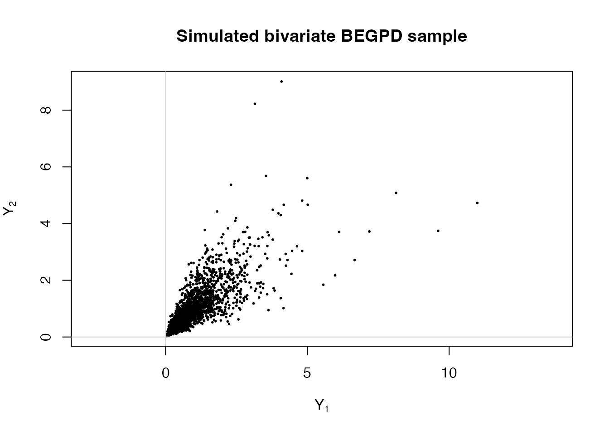
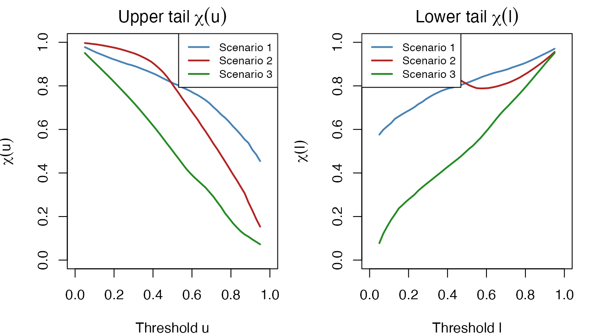
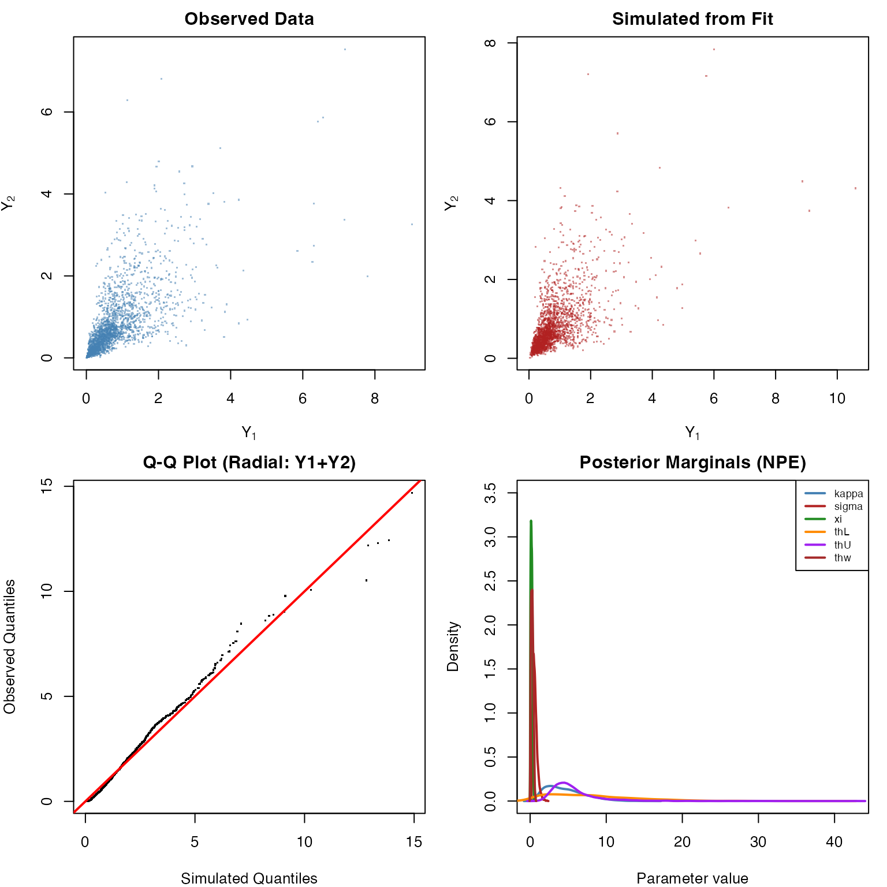

Bivariate BEGPD via Neural Bayes Estimation
Source:vignettes/multivariate-egpd.Rmd
multivariate-egpd.RmdThe egpd package supports Bivariate Extended Generalized
Pareto Distribution (BEGPD) models, fitted via neural Bayes estimation.
Unlike the univariate fitegpd() methods that use maximum
likelihood, the bivariate BEGPD uses pre-trained neural networks to
perform amortized inference – either posterior sampling (NPE) or point
estimation (NBE).
This vignette covers:
- The BEGPD model – construction and parameters
-
Simulating bivariate data –
rbegpd()(pure R, no Julia needed) - Illustrative scenarios – how parameters shape the dependence structure
-
Neural Bayes estimation – fitting via
fitegpd(family = "begpd") - Diagnostics and inference – S3 methods, posterior summaries, and plots
-
Training custom models –
train_begpd()
1. The bivariate BEGPD model
The BEGPD jointly models two variables by decomposing them into a radial (intensity) component and angular (dependence) components.
Radial component
The intensity follows a power-transformed GPD:
where is the EGPD shape, is the GPD scale, and is the GPD shape parameter. The CDF of is the EGPD CDF:
Lower and upper tail dependence
The angular structure is governed by two symmetric Beta distributions that control the lower and upper tail behaviour respectively:
- Lower tail angles: , with and
- Upper tail angles: , with
Large values of or concentrate the angular distribution around equal splitting (independence), while small values induce stronger dependence.
2. Simulating bivariate data
The rbegpd() function generates bivariate samples from
the BEGPD. It is pure R and does not require Julia.
library(egpd)
set.seed(42)
Y <- rbegpd(2000, kappa = 3, sigma = 1, xi = 0.1,
thL = 10, thU = 10, thw = 0.25)
head(Y)
#> Y1 Y2
#> [1,] 2.8277805 1.4084486
#> [2,] 2.5063541 2.1793926
#> [3,] 0.6210209 0.5147301
#> [4,] 1.1398503 2.1080683
#> [5,] 1.1267881 1.0683751
#> [6,] 0.8451407 0.9228765
dim(Y)
#> [1] 2000 2
plot(Y[, 1], Y[, 2], pch = 20, cex = 0.4, asp = 1,
xlab = expression(Y[1]), ylab = expression(Y[2]),
main = "Simulated bivariate BEGPD sample")
abline(h = 0, v = 0, col = "lightgrey")
3. Illustrative scenarios
The six parameters of the BEGPD control different aspects of the bivariate distribution. We illustrate three scenarios that highlight these effects.
scenarios <- list(
"Scenario 1:\nsymmetric dependence" = list(
kappa = 3, sigma = 1, xi = 0.05, thL = 10, thU = 10, thw = 0.25
),
"Scenario 2:\nasymmetric tails" = list(
kappa = 0.3, sigma = 1, xi = 0.05, thL = 10, thU = 0.5, thw = 0.25
),
"Scenario 3:\nheavy tails" = list(
kappa = 3, sigma = 1, xi = 0.2, thL = 4, thU = 0.5, thw = 0.25
)
)
set.seed(198345)
n <- 2000
op <- par(mfrow = c(3, 3), mar = c(4, 4, 2.5, 1), mgp = c(2.5, 1, 0))
for (i in seq_along(scenarios)) {
sc <- scenarios[[i]]
Y <- rbegpd(n, kappa = sc$kappa, sigma = sc$sigma, xi = sc$xi,
thL = sc$thL, thU = sc$thU, thw = sc$thw)
R <- Y[, 1] + Y[, 2]
ind_upp <- which(R > quantile(R, 0.95))
ind_low <- which(R < quantile(R, 0.05))
# Panel 1: scatter on original scale
plot(Y[, 1], Y[, 2], pch = 20, cex = 0.4, asp = 1,
xlim = range(Y), ylim = range(Y),
xlab = expression(Y[1]), ylab = expression(Y[2]),
main = names(scenarios)[i])
points(Y[ind_upp, 1], Y[ind_upp, 2], pch = 20, col = "red", cex = 0.6)
points(Y[ind_low, 1], Y[ind_low, 2], pch = 20, col = "blue", cex = 0.6)
abline(h = 0, v = 0, col = "lightgrey")
# Panel 2: scatter on uniform (copula) scale
U1 <- rank(Y[, 1]) / (n + 1)
U2 <- rank(Y[, 2]) / (n + 1)
plot(U1, U2, pch = 20, cex = 0.4, asp = 1, xlim = c(0, 1), ylim = c(0, 1),
xlab = expression(Y[1] ~ "(Unif scale)"),
ylab = expression(Y[2] ~ "(Unif scale)"))
points(U1[ind_upp], U2[ind_upp], pch = 20, col = "red", cex = 0.6)
points(U1[ind_low], U2[ind_low], pch = 20, col = "blue", cex = 0.6)
abline(h = c(0, 1), v = c(0, 1), col = "lightgrey")
# Panel 3: marginal histograms of radial component
hist(R, breaks = 50, freq = FALSE, col = "lightblue", border = "grey",
main = expression("Radial: " * Y[1] + Y[2]),
xlab = expression(Y[1] + Y[2]))
}
par(op)Interpretation:
- Scenario 1 (, ): Symmetric dependence in both tails. The upper and lower extremes (red and blue) are roughly equally spread.
- Scenario 2 (, ): Small concentrates mass near zero, while small induces strong upper tail dependence (red points cluster along the diagonal).
- Scenario 3 (, , ): Heavier GPD tail () and stronger dependence in both tails.
Tail dependence measures
We can quantify the dependence structure using the chi coefficients. For threshold :
set.seed(1)
n_big <- 50000
chi_u <- function(data, u) {
U1 <- rank(data[, 1]) / (nrow(data) + 1)
U2 <- rank(data[, 2]) / (nrow(data) + 1)
sum(U1 > u & U2 > u) / sum(U1 > u)
}
chi_l <- function(data, l) {
U1 <- rank(data[, 1]) / (nrow(data) + 1)
U2 <- rank(data[, 2]) / (nrow(data) + 1)
sum(U1 < l & U2 < l) / sum(U1 < l)
}
thresholds <- seq(0.05, 0.95, by = 0.02)
op <- par(mfrow = c(1, 2), mar = c(4, 4, 2, 1))
cols <- c("steelblue", "firebrick", "forestgreen")
# Upper tail chi
plot(0, 0, type = "n", xlim = c(0, 1), ylim = c(0, 1),
xlab = "Threshold u", ylab = expression(chi(u)),
main = expression("Upper tail " * chi(u)))
for (i in seq_along(scenarios)) {
sc <- scenarios[[i]]
Y_big <- rbegpd(n_big, kappa = sc$kappa, sigma = sc$sigma, xi = sc$xi,
thL = sc$thL, thU = sc$thU, thw = sc$thw)
chi_vals <- sapply(thresholds, function(u) chi_u(Y_big, u))
lines(thresholds, chi_vals, col = cols[i], lwd = 2)
}
legend("topright", legend = paste("Scenario", 1:3), col = cols, lwd = 2,
cex = 0.8, bg = "white")
# Lower tail chi
plot(0, 0, type = "n", xlim = c(0, 1), ylim = c(0, 1),
xlab = "Threshold l", ylab = expression(chi(l)),
main = expression("Lower tail " * chi(l)))
for (i in seq_along(scenarios)) {
sc <- scenarios[[i]]
Y_big <- rbegpd(n_big, kappa = sc$kappa, sigma = sc$sigma, xi = sc$xi,
thL = sc$thL, thU = sc$thU, thw = sc$thw)
chi_vals <- sapply(thresholds, function(l) chi_l(Y_big, l))
lines(thresholds, chi_vals, col = cols[i], lwd = 2)
}
legend("topleft", legend = paste("Scenario", 1:3), col = cols, lwd = 2,
cex = 0.8, bg = "white")
par(op)4. Neural Bayes estimation
Why neural estimation?
The bivariate BEGPD has six parameters and no closed-form likelihood for the joint distribution. Traditional likelihood-moment approaches require a multi-stage procedure: (1) fit the radial EGPD by MLE, (2) estimate the angular parameters by matching moments in the tails, and (3) estimate the mixing parameter by least-squares on the covariance. This is slow and can be sensitive to threshold choices.
Neural Bayes estimation sidesteps the likelihood entirely. A neural network is trained on simulated data to learn the mapping from data to parameters. Once trained, inference on new datasets is nearly instant.
The egpd package supports two estimators:
| Estimator | Method | Output |
|---|---|---|
| NPE (Neural Posterior Estimator) | Normalising flow | Full approximate posterior (samples) |
| NBE (Neural Bayesian Estimator) | Ensemble of point estimators | Point estimates only |
Both use a DeepSet architecture that can handle varying sample sizes.
Prerequisites
Neural Bayes estimation requires Julia (>= 1.11) and additional packages:
# R packages
install.packages("JuliaConnectoR")
remotes::install_github("msainsburydale/NeuralEstimators")
# Julia packages (run in Julia REPL)
# using Pkg
# Pkg.add(["NeuralEstimators", "Flux"])Fitting with NPE
The NPE provides full posterior inference: given data, it returns samples from the approximate posterior distribution over all six parameters.
set.seed(42)
# Simulate data from known parameters
Y <- rbegpd(2000, kappa = 2, sigma = 1, xi = 0.1,
thL = 5, thU = 5, thw = 0.2)
# Fit using Neural Posterior Estimation
fit_npe <- fitegpd(Y, family = "begpd", method = "neuralbayes",
estimator = "npe", nsamples = 2000)
#> Starting Julia ...The nsamples argument controls how many draws are taken
from the approximate posterior (default: 1000). More samples give
smoother posterior summaries at the cost of slightly longer
inference.
summary(fit_npe)
#> Fitting of bivariate BEGPD
#> Method: neuralbayes (npe) [2000 posterior samples]
#>
#> Posterior summary:
#> Median Post.SD 2.5% 97.5%
#> kappa 4.1296 2.4917 1.1319 10.2463
#> sigma 0.5916 0.2868 0.2745 1.3622
#> xi 0.1786 0.1074 0.0180 0.4073
#> thL 7.0179 5.8291 0.6013 21.6860
#> thU 4.9276 3.2240 2.2466 13.9202
#> thw 0.2560 0.1440 0.0374 0.5616
#>
#> Note: log-likelihood, AIC, and BIC are not available for neural estimation
#> Number of observations: 2000The summary provides:
- Median: Posterior median (point estimate)
- Post.SD: Posterior standard deviation
- 2.5% / 97.5%: 95% credible interval from posterior quantiles
Fitting with NBE
The NBE is faster but only provides point estimates (no uncertainty quantification):
fit_nbe <- fitegpd(Y, family = "begpd", method = "neuralbayes",
estimator = "nbe")
summary(fit_nbe)
#> Fitting of bivariate BEGPD
#> Method: neuralbayes (nbe)
#>
#> Estimated parameters:
#> Estimate SE
#> kappa 2.8949 NA
#> sigma 0.7741 NA
#> xi 0.2000 NA
#> thL 8.0920 NA
#> thU 3.8026 NA
#> thw 0.2455 NA
#>
#> Note: log-likelihood, AIC, and BIC are not available for neural estimation
#> Number of observations: 20005. Diagnostics and inference
Diagnostic plots
The plot() method produces a 4-panel diagnostic plot
adapted for bivariate data:
plot(fit_npe)
The panels show:
- Observed scatter – the input data
-
Simulated scatter – data generated from the fitted
model via
rbegpd()with the estimated parameters - Radial Q-Q plot – quantiles of (observed vs simulated)
- Posterior marginals (NPE) or parameter bar chart (NBE)
Extracting estimates
Standard S3 methods work as expected:
# Point estimates (posterior median for NPE)
coef(fit_npe)
#> kappa sigma xi thL thU thw
#> 4.1296459 0.5915987 0.1785721 7.0179195 4.9275990 0.2559894
# Variance-covariance (from posterior sample covariance for NPE)
vcov(fit_npe)
#> kappa sigma xi thL thU
#> kappa 6.20876884 -0.571721025 0.1335469245 0.63108999 0.601615525
#> sigma -0.57172103 0.082238160 -0.0210034243 0.10547034 -0.175714043
#> xi 0.13354692 -0.021003424 0.0115331643 -0.01193396 0.005737354
#> thL 0.63108999 0.105470336 -0.0119339605 33.97843008 -10.499744226
#> thU 0.60161552 -0.175714043 0.0057373543 -10.49974423 10.394390693
#> thw 0.04488354 -0.005127827 0.0001122861 0.00196085 0.124885490
#> thw
#> kappa 0.0448835378
#> sigma -0.0051278273
#> xi 0.0001122861
#> thL 0.0019608500
#> thU 0.1248854900
#> thw 0.0207488274
# 95% credible intervals (from posterior quantiles for NPE)
confint(fit_npe)
#> 2.5 % 97.5 %
#> kappa 1.13185648 10.2462680
#> sigma 0.27450253 1.3621800
#> xi 0.01798964 0.4073298
#> thL 0.60129781 21.6860339
#> thU 2.24656541 13.9202364
#> thw 0.03736404 0.5616213
confint(fit_npe, level = 0.90)
#> 5 % 95 %
#> kappa 1.38581448 9.1184592
#> sigma 0.30007208 1.1953838
#> xi 0.02824100 0.3728958
#> thL 0.96799042 18.8530634
#> thU 2.51369718 11.7649020
#> thw 0.05467705 0.5223033
# Subset parameters
confint(fit_npe, parm = c("kappa", "xi"))
#> 2.5 % 97.5 %
#> kappa 1.13185648 10.2462680
#> xi 0.01798964 0.4073298Comparing to true values
Since we know the true parameters, we can assess the estimation quality:
truth <- c(kappa = 2, sigma = 1, xi = 0.1, thL = 5, thU = 5, thw = 0.2)
est <- coef(fit_npe)
ci <- confint(fit_npe)
comparison <- data.frame(
True = truth,
Estimate = round(est, 4),
Lower = round(ci[, 1], 4),
Upper = round(ci[, 2], 4),
Covered = truth >= ci[, 1] & truth <= ci[, 2]
)
comparison
#> True Estimate Lower Upper Covered
#> kappa 2.0 4.1296 1.1319 10.2463 TRUE
#> sigma 1.0 0.5916 0.2745 1.3622 TRUE
#> xi 0.1 0.1786 0.0180 0.4073 TRUE
#> thL 5.0 7.0179 0.6013 21.6860 TRUE
#> thU 5.0 4.9276 2.2466 13.9202 TRUE
#> thw 0.2 0.2560 0.0374 0.5616 TRUELimitations
Since the neural estimator bypasses the likelihood, some standard likelihood-based quantities are not available:
logLik(fit_npe) # returns NA with a warning
#> Warning: Log-likelihood is not available for neural Bayes estimation
#> 'log Lik.' NA (df=6)
AIC(fit_npe) # NA
#> Warning: Log-likelihood is not available for neural Bayes estimation
#> [1] NA
BIC(fit_npe) # NA
#> Warning: Log-likelihood is not available for neural Bayes estimation
#> [1] NA
# vcov and confint require NPE (not available for NBE)
vcov(fit_nbe) # error: no posterior samples
#> Error:
#> ! Variance-covariance matrix not available for NBE estimator (no posterior samples)
confint(fit_nbe) # error: no posterior samples
#> Error:
#> ! Credible intervals not available for NBE estimator (no posterior samples)6. Simulation study
To assess the quality of the neural estimators, we can run a small simulation study.
set.seed(1)
K <- 100 # number of replications
n <- 2000
true_params <- c(kappa = 2, sigma = 1, xi = 0.1, thL = 5, thU = 5, thw = 0.2)
# Simulate K datasets (pure R -- fast)
datasets <- lapply(seq_len(K), function(k) {
rbegpd(n, kappa = true_params["kappa"], sigma = true_params["sigma"],
xi = true_params["xi"], thL = true_params["thL"],
thU = true_params["thU"], thw = true_params["thw"])
})
cat("Generated", K, "datasets, each with", n, "observations\n")
#> Generated 100 datasets, each with 2000 observations
cat("Each dataset is a", nrow(datasets[[1]]), "x", ncol(datasets[[1]]), "matrix\n")
#> Each dataset is a 2000 x 2 matrixWith Julia available, these datasets can be estimated:
# Estimate a subset of datasets (full study would use all K)
K_est <- min(K, 10)
estimates <- sapply(datasets[seq_len(K_est)], function(Y) {
fit <- fitegpd(Y, family = "begpd", method = "neuralbayes",
estimator = "npe", nsamples = 1000)
coef(fit)
})
# RMSE for each parameter (based on K_est replications)
rmse <- sqrt(rowMeans((estimates - true_params)^2))
cat("RMSE (based on", K_est, "replications):\n")
#> RMSE (based on 10 replications):
print(round(rmse, 4))
#> kappa sigma xi thL thU thw
#> 2.2449 0.4107 0.0825 2.0747 0.6619 0.05377. Training custom models
The bundled .bson models were trained on uniform priors
covering a wide parameter range. For specific applications, you may want
to train on a narrower prior to improve accuracy.
Quick training
# Quick training for testing (small K, few epochs)
paths <- train_begpd(
savepath = tempdir(),
estimator = "both", # train both NPE and NBE
quick = TRUE, # reduced settings
verbose = TRUE
)
# Training messages:
#> Sampling parameters and simulating data...
#> Training NPE...
#> NPE saved to /tmp/.../NPE.bson
#> Training NBE...
#> NBE saved to /tmp/.../NBE.bson
#> Training complete.
# Use the custom-trained model
fit_custom <- fitegpd(Y, family = "begpd", method = "neuralbayes",
model.path = paths$npe, estimator = "npe")Full training
For production use, train with the full settings:
paths <- train_begpd(
savepath = "inst/models",
estimator = "both",
K = 100000, # training parameter sets
m = 1000:4000, # sample size range
epochs = 100, # maximum epochs
stopping_epochs = 10, # early stopping patience
mc.cores = 4, # parallel simulation cores
seed = 1,
verbose = TRUE
)Training hyperparameters
| Parameter | Quick mode | Full mode | Description |
|---|---|---|---|
K |
20,000 | 100,000 | Training parameter sets |
m |
500:1000 | 1000:4000 | Sample size range |
epochs |
10 | 100 | Maximum training epochs |
stopping_epochs |
10 | 10 | Early stopping patience |
The training procedure:
- Samples parameters from uniform priors: , , , , ,
- Simulates bivariate data from each parameter set using
rbegpd() - Applies a variance-stabilizing transformation:
- Applies a log transformation to parameters:
- Trains the neural network to map
8. Neural network architecture
The neural estimator uses a DeepSet architecture, which is naturally suited for set-valued inputs (samples of varying size). It consists of:
- (encoder): Processes each 2-dimensional observation through shared Dense layers with residual connections and LayerNorm
- (aggregator): Aggregates the encoded representations using mean pooling, concatenates an expert summary statistic (), and maps to the output dimension
- Expert statistic: The log sample size provides the network with information about the precision of the input data
For NPE, the output feeds into a normalising flow that approximates the full posterior distribution. For NBE, an ensemble of five point estimators is used, with the final estimate being their average.
References
Alotaibi, N., Sainsbury-Dale, M., Naveau, P., Gaetan, C., and Huser, R. (2025). Joint modeling of low and high extremes using a multivariate extended generalized Pareto distribution. arXiv preprint arXiv:2509.05982. https://arxiv.org/abs/2509.05982
Sainsbury-Dale, M., Zammit-Mangion, A., and Huser, R. (2024). Likelihood-free parameter estimation with neural Bayes estimators. The American Statistician, 78(1), 1–14.
Naveau, P., Huser, R., Ribereau, P., and Hannart, A. (2016). Modeling jointly low, moderate, and heavy rainfall intensities without a threshold selection. Water Resources Research, 52(4), 2897–2911.